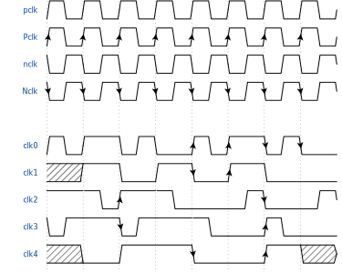
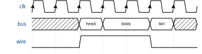
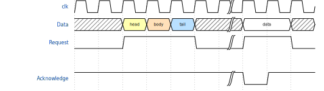
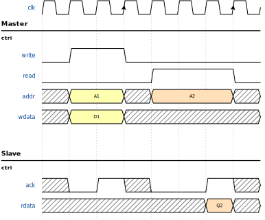
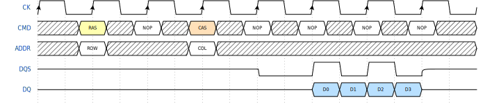
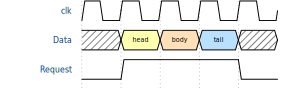
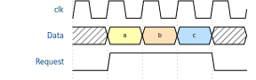
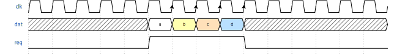
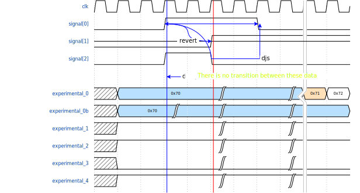
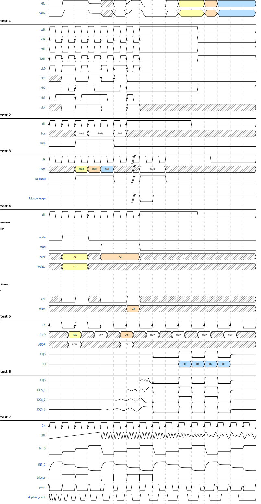

Welcome to Example’s documentation!¶
Contents:
Intro¶
Step 1. The Signal¶
Step 2. Adding Clock¶
Step 3. Putting all together¶
Step 4. Spacers and Gaps¶
Step 5. The groups¶
Step 6. Period and Phase¶
Step 7.The config{} property¶
Hscale=1¶
Hscale=2¶
Hscale=3¶
Head, foot, tock, text¶
H1, h2, h3, h4, h5, h6, muted, warning, error, info, success¶
Step 10. From file¶
Step 11. Figure¶

Figure caption